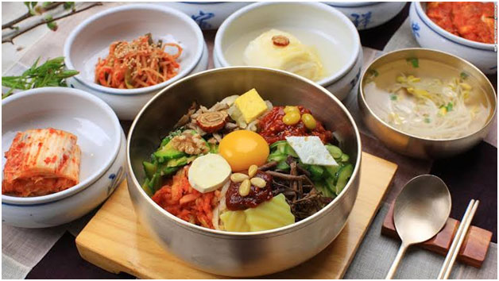

the capital of south korea obiusly, this webpage is all about south korea, back to topic it is seol
theres alot of landmarks in south korea like n seol tower, Gyeongbokgung Palace, Bukchon Hanok Village, and Changdeokgung
in south korea theres is some yummy foods like kimbop, bibimbop, kimchi,
samgyetang, al tang, neangmeon, pajeon, korean mandu, and tokpokki

there are alot of places to stay in korea like theres 29 places to stay I think around that amount
click
this for more places to stay
| hongdae | dubu dubu | bon kbbq |
|---|---|---|
| $30-50 | $20–30 | $20–30 |
| 9889 Bellaire Blvd Suite D-229, Houston, TX 77036 | 3815 Richmond Ave. Suite B, Houston, TX 77027 | 8338 W Sam Houston Pkwy S Suite 168, Houston, TX 77072 |
| Moochaeseck Hongdae rooftop restaurant pub | Walking on the Cloud |
|---|---|
| ₩20,000–30,000 | ₩100,000+ |

South Korea (The Republic of Korea) is in the eastern part of the Asian continent, in the Northern Hemisphere. It has maritime borders with the Yellow Sea and the Sea of Japan. It also has land borders with North Korea (The Democratic People’s Republic of Korea). South Korea is similar in size to Virginia. There is 1 time zone, and it’s 13 hours ahead of Washington D.C.
South Korea is a major non-NATO ally of the United States and is regarded as a regional power in East Asia and an emerging power in global affairs.
Tourist visa requirements A visa is not required for stays 90 days or less for business or tourism. The Korean Electronic Travel Authorization(opens in a new tab) (K-ETA) exemption for U.S. passport holders was extended through December 31, 2025. Starting January 1, 2026, you will need a K-ETA before traveling to South Korea. A visa is required for all other travel purposes, including employment, teaching English, and stays longer than 90 days. Vaccinations Not required Valid passport requirements Must be valid at the time of entry. There is no minimum expiration validity requirement. Currency on entry and exit No declaration needed on entry or exit.